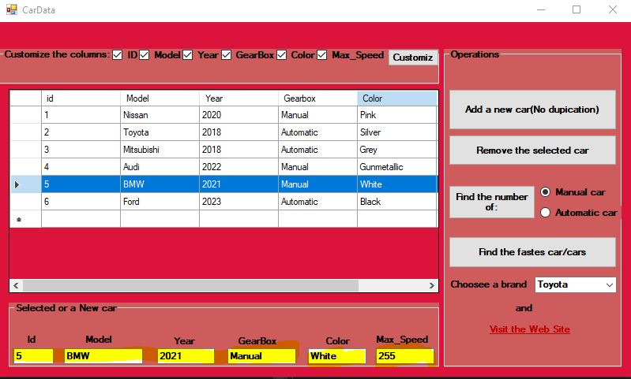
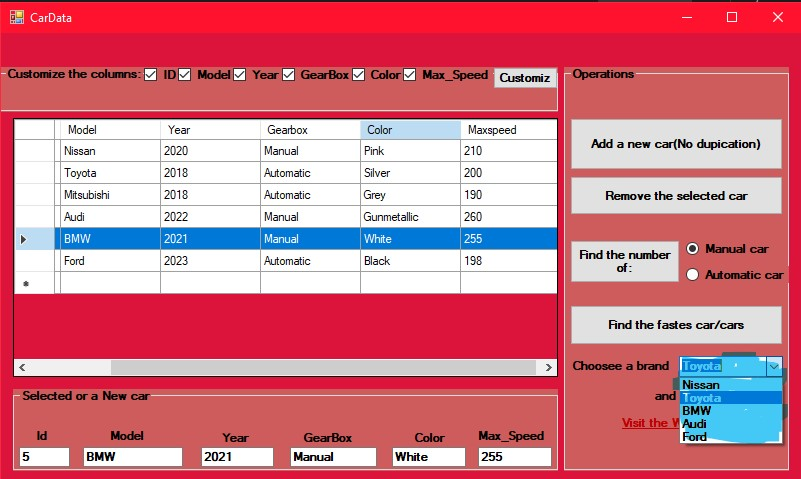

y 1, Year

The Car Data Entry Project is a comprehensive and user-friendly application developed using C#. It provides a platform for efficient management of car details such as model, gear type, speed, color, and more. With this application, users can easily add, delete, and update car information in a hassle-free manner.
The project offers a user-friendly interface that allows users to input various car details and store them securely in a database. Users can add new cars to the system by entering all the necessary information, including the car's model, gear type, speed capabilities, and color.
One of the notable features of this project is the ability to search and find the fastest car based on specified criteria. Users can perform a search based on speed, color, or other attributes to find the car that meets their requirements.
Additionally, the project allows users to delete car entries from the database, providing a seamless way to remove outdated or unnecessary information.
The Car Data Entry Project is built with efficiency and ease of use in mind, offering a reliable solution for managing car details effectively. Its intuitive interface and powerful functionalities make it a valuable tool for car enthusiasts, car dealerships, or anyone interested in organizing and tracking car information.
y 2, Year

In addition to the car data management features, the Car Data Entry Project offers a functionality that allows users to explore and analyze car information based on gear type. Users can select a specific gear type, such as manual or automatic, and the system will provide them with the number of cars available with that particular gear type.
This feature enables users to quickly access and retrieve valuable insights about the distribution of gear types among the cars in the database. It helps users make informed decisions or gain a better understanding of the gear preferences in the car collection.
y 3, Year

Within the Car Data Entry Project, users are provided with a convenient option to interact with specific cars listed in the database. By clicking on a particular car entry, users can effortlessly access detailed information about that specific car, including its model, gear type, speed, color, and other relevant details.
This interactive feature enables users to view a comprehensive snapshot of a car's attributes, facilitating a deeper understanding of its characteristics. Moreover, users have the flexibility to modify or update the information associated with a car, allowing them to make necessary changes or corrections as needed. This functionality ensures the accuracy and integrity of the car data within the system.
Furthermore, the project allows users to delete a car entry entirely if it is no longer relevant or needs to be removed from the database. This ensures efficient data management and organization, as unnecessary or outdated car entries can be easily eliminated.
y 4, Year

Unleash the Need for Speed with our advanced car data entry system! Our innovative application allows you to easily manage and organize car details, including model, gear type, speed, color, and more. But that's not all - we've added a thrilling feature that lets you find the fastest car in the list with just a click of a button.
y 5, Year

Experience the world of automotive excellence with our car data entry system. We understand that as a car enthusiast, you crave not only information but also a direct connection to the car brands you admire. That's why we've incorporated a unique feature that allows you to easily access the official websites of various car brands.
With a simple click, you can explore the virtual showroom of your favorite car manufacturers and delve into the latest models, cutting-edge technologies, and captivating designs. Whether you're drawn to the elegance of luxury brands or the raw power of sports car manufacturers, our system provides a seamless gateway to the official sites of renowned car brands.
Stay up to date with the latest releases, browse through stunning image galleries, and immerse yourself in the world of automotive innovation. Our user-friendly interface ensures that you can effortlessly navigate between the car data entry system and the official websites, providing you with a comprehensive and immersive car enthusiast experience.
Embrace the opportunity to connect directly with the car brands you love and discover the endless possibilities that await you. Take your passion for cars to new heights as you explore the official sites and immerse yourself in the captivating world of automotive excellence.